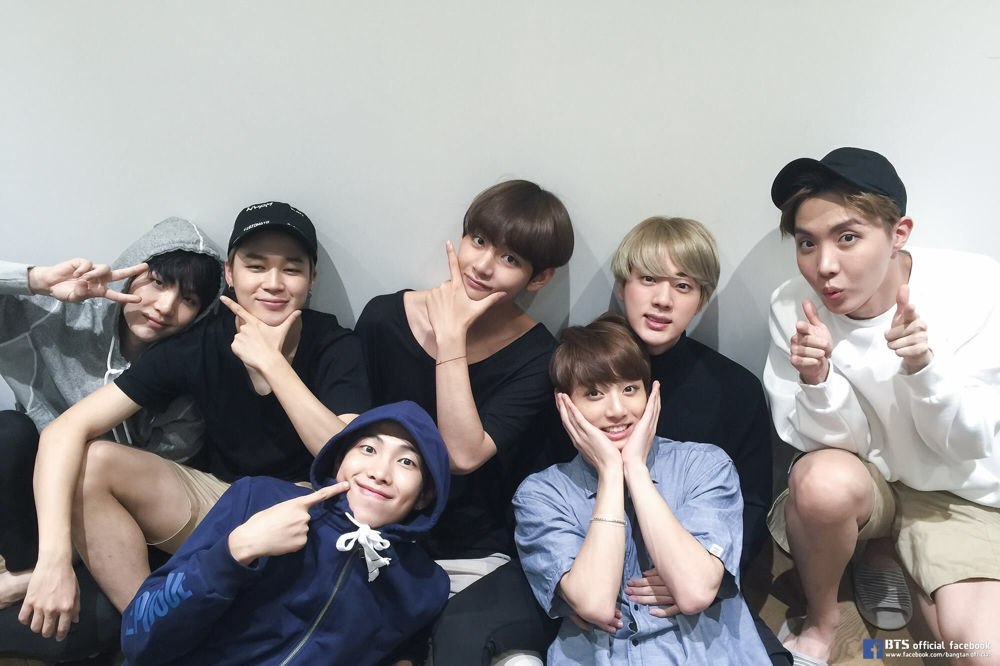

<!DOCTYPE html>
<html lang="en">
<head>
    <meta charset="UTF-8">
    <meta http-equiv="X-UA-Compatible" content="IE=edge">
    <meta name="viewport" content="width=device-width, initial-scale=1.0">
    <title>oca</title>
    
    <link rel="stylesheet" href="index.css">
</head>
<body>
    
</body>
</html>
<div class="circle">


</div>

<p>
 <div class="perkenalan">
    HALO</br> Nama saya Ophelia phalosa. saat ini saya merupakan mahasiswa kelas 10 program keahlian pengembangan perangkat lunak dan Gim (PPLG) SMK WIKRAMA BOGOR 
    < Saya sedang mengembangkan keahlian diri dalam bidang Front end development 
    < ingin berkenalan? </br> hubungi saya melalui whatsaap atau instagram 
</div>
</p>
<div class="data">
<h1>Ophelia Phalosa</h1>
<h2>Bogor, 21 Oktober 2005</h2>
<h3>Nama ig:ochmin_</h3>
<h4>Whatsaap:089510118677</h4>
</div>

<div class="pengalaman">
Pengalaman Organisasi
<ol type="1">
    <li>Menjadi Anggota senitari di smpn 1 cigombong 2019-2020</li>
</ol>
</div>

<div class="inspirasi">
Inspirasi
<ul type="circle">
    <li>kejar.id : menyediakan konten pembelajaran yang cukup mudah dan dapat di akses secara gratis</li>
    <li>instagram : dapat mengaplod foto dan banyak filter yang bagus dan dapat mengabadikan momen</li>
    <li>youtube : banyak video yang menyenangkan dan dapat melihat idola kita dari youtube ini</li>
</br>
</div>
<div class="skill">
Skill Pasport
<ol type="1">
    <li>Dapat meninstalasi tool yang di perlukan untuk membuat website statis</li>
    <li>Menyusun kerangka website statis menggunakan HTML</li>
    <li>Menggunakan css eksternaluntuk mengatur tampilan website statis</li>
    <li>membuat tampilan website statis menjadi responsive</li>
    <li>meluncurkan dan memelihara website statis</li>
</br>
</div>
<div class="circle">
    
</div>

<div class="bangtan">
 7 Laki-laki penyemangat hidupku </br>
    kenalin mereka adalah laki-laki yang gw temui pada tahun 2017.mereka adalah penyemangat hidup gw mungkin ini terlalu lebay ya tapi kalo boleh gw jujur </br>
    semenjak mereka datang ke kehidupan gw serasa hidup gw tuh berwarna dan serasa gw tuh bnr bnr hidup dari sebelum nya gw selalu murung, down, putus asa, sampe awalnya gw pengen nyerah </br>
    dan gw ketemu mereka secara ga sengaja walaupun gw tau mereka tau gw ada di dunia ini atau kaga tapi gw ngerasa mereka selalu ada disisi gw kapanpun, dmnpun, dan dalam keadaan apapun. </br>
    mereka berharga banget bagi gw karna mereka selalu suport gw, selalu nyemangatin gw, untuk saat ini gw cuma butuh mereka gw pengen banget ceritain masalah gw ke mereka </br>
    mungkin menurut orang ini terlalu lebay, berlebihan atau apa tapi jujur dari hati gw gw lebih nyaman cerita masalah gw ke mereka dari pada ke keluarga gw sendiri. </br>
    dan jimin dia orang yang paling gw sayang dan gw kaga mau kehilangan dia gw kaga tau jadinya gw kalo gw kehilangan bangtan dan jimin dah deh ga mau lanjutin lagi takut gw jadi nagis. </br>
    CUKUP SEKIAN CERITA GW TERIMAKASIH, DAN UNTUK BANGTAN GW JANJI GW BAKAL SELALU ADA UNTUK KALIAN WALAUPUN KALIAN KAGA TAU GW IDUP GW BAKAL SELALU MENCINTAI KALIAN SAMPAI KAPANPUN LOVE YOU.


